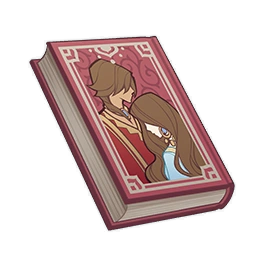

The Tale of Shiruyeh and Shirin¶

Vol. 1¶
Note
A Jinni tells a tale on the night wind, a story about itself and a shepherd. It's a story of unknown origin and is full of absurdities.
"The next story I'll tell comes from the age of Shiruyeh, the Lord of Pestilence, though at this time, that vassal ruler had not yet gained notoriety for Shiruyeh's Plague, nor had his subjects been scattered amidst a world of darkness, left to become wild creatures who had lost their language and faces..."
The fairy of the moon maiden's city paused for a moment, then stretched out lazily. The moonlit silver coins jangled on her wrists and ankles as if displeased with the jouncing of the Sumpter Beast.
"Anyway, little raven, do you know the meaning of the name "Shiruyeh"?"
"Uh... 'One who is ridiculous and despicable'?"
The youth whom she had rather one-sidedly named "Raven" answered casually. Suffering the heat of the sun and the threat of quicksand, he had little interest in his travel companion's stories.
"In our tribe, 'Shiruyeh' is a disgraceful name branded only onto the foreheads of exiled chiefs and spoken only in curses and mockery. It's a tradition of ours... But I'm sure that the traditions of other tribes are not so different."
"Haha! Mortal awareness is just like quicksand, shifting with the winds of time. How bizarre!"
"Raven" replied perfunctorily, drawing an unexpectedly enthusiastic taunt from the fairy,
"Now, actually... in the lost language, 'Shiruyeh' means 'unweaned lion cub'. His father Parvezravan gave this name to his newborn son, oblivious that he, the vassal king who referred to himself as the 'Spirit of Unceasing Victory,' would be torn apart by his own beloved 'lion cub'..."
The fairy paused, seemingly afraid that her audience was getting bored, and exchanged glances with the youth before continuing her tale:
"As for this Parvezravan, legend has it that in the days when mortals ruled as vassal kings, he was one of the mightiest among them..."
"Parvezravan was not, in fact, the original name of this vassal king. As the spirits tell it, he was an orphan who was raised in the nest of the giant bird Ghoghnus and given the name 'Kisra,' or 'one who has been bestowed a good name.' Later, his aspiration to greatness and the aid of this divine bird saw him adopted by the vassal king Ormazd Shah, and he would eventually rise to become a sage and hero among mortals.
In the songs of the now-vanished desert people, Kisra plundered the four corners of the land in the name of his king, Ormazd Shah. By his hand, the bronze and mortar towers of ninety-nine cities were destroyed or abandoned. By his hand, the leaders of ninety-nine nomadic tribes were defeated. And by his hand, ninety-nine sages with knowledge of the order of the stars were bound in golden chains, then led back to the towering royal city of Gurabad to be imprisoned.
At that time, the promised land of "Valivija" was engulfed by wild, gilded sands, and one of the three living gods had fallen. Amidst a century of chaos and confusion, the scattered mortals ensconced themselves in vassal states until my lord Al-Ahmar and the Sage-King of the Greenwood gathered their subjects. Once the oasis paradise was reconstructed, the age of the vassal kings, the age of division, finally came to a close.
Returning to our preceding tale, Ormazd's crown grew all the more valuable on the back of Kisra's exploits, until finally his own neck could no longer bear its weight, forcing him to leave it ever suspended from chains of pure gold in the center of the main hall.
The vassal king Ormazd Shah rewarded young Kisra's unrivaled achievements amply: He bestowed the name "Parvez" upon his adopted son and offered his daughter Shirin's hand to him in marriage. In the ethereal songs of the spirits, as the heir of both the mortal vassal king and the foremother Liloufar, she possessed superior wisdom and was blessed with an infinite lifespan and, like the original sages, could foresee the fortunes and misfortunes of the present moment.
If Kisra Parvez had stopped there, his reputation as a hero would have continued unblemished. But one cursed day, Ormazd and all 300 of his offspring suddenly died in one night in the city of Gurabad. Following such an unthinkable event, the throne naturally fell to Kisra, who added "Ravan" to his title and became the most powerful vassal king among mortals.
"..."
The fairy abruptly stopped her tale and looked up at the red sun that was now sinking behind the sand dunes. She then whistled sharply, signaling to the youth to halt the Sumpter Beast and prepare to make camp for the night under the crumbling stone pillars.
"Some people say..."
The fairy lithely leaped down from the Sumpter Beast and circled across the sands in a manner not unlike the long-lost dancers of Setaria, letting the moon's first light evenly coat her translucent skin in its silvery sheen. The scent of myrrh swirled around her myriad braids as the golden bells rang out into the distance.
Then, the fairy leaned over slightly, balancing on the tips of her toes as she laughed softly.
Some people say that the tragedy that befell the city of Gurabad was the handiwork of the hero Kisra.
Some people say that the night the tragedy took place, an evil, clawless bird flew out from the redoubt and wailed throughout the night without stopping to eat or drink. The castle was then struck by a plague of rats with human faces, which gnawed at the gold chains from which the crown hung, causing the cumbersome thing to crash heavily to the ground, broken and bent.
People say that the crown made such an earth-shaking noise when it fell that even the Fellahin servants, who had settled and toiled far from the redoubt, trembled with fear at this tyrant they had never met.
Later still, it is said that an adventurer found the ancient crypts of the city of Gurabad beneath the gilded sands, in which were hidden the withered, massive remains of Ormazd and his offspring, An ancient, inscrutable inscription was left on each of the shriveled bodies...
"I hope this story frightened you."
The fairy watched keenly as the mortal boy before her drank from the waterskin.
The tribes of the desert regard water with an instinctive restraint and prudence. Spirits, however, are born of pure elemental energy and know neither thirst nor the satisfaction of the pleasure of luxury, just like the ancient princess Shirin in this lament.
"As for the daughter of the foremother Liloufar I mentioned, Shirin — why, our story has only just begun..."
The fairy smiled slyly again, her eyes like an amalgam of amber and gold, her smiling face like the princess of her ancient homeland.
Vol. 2¶
Note
A Jinni tells a tale on the night wind, a story about itself and a shepherd. It's a story of unknown origin and is full of absurdities.
At that time, the promised land of "Valivija" was engulfed by wild, gilded sands, and one of the three living gods had fallen. Amidst a century of chaos and confusion, the scattered mortals ensconced themselves in vassal states until my lord Al-Ahmar and the Sage-King of the Greenwood gathered their subjects. Once the oasis paradise was reconstructed, the age of the vassal kings, the age of division, finally came to a close.
"Yes, you've mentioned this part of the story already."
The youth's tone was rather impatient as he gazed at the full moon hanging in the starry sky, using the positions of its companion stars to determine the next day's route.
But the spirit knew that he was, in truth, listening earnestly to her story. She couldn't refrain from letting out a triumphant snort, but was immediately annoyed by this unbecoming action:
"The mortal mind is as fickle as it is forgetful. How should I know whether you were listening or not?"
Back to the subject at hand — Shirin, according to the spirits' lamentations, was the daughter of the mortal hero Ormazd and the fairy Liloufar, the Daughter of the Water Lily. Born upon a lily pad amid fragrant dewdrops, the white ibis blessed her, and the cobra bequeathed to her a cerulean pearl, and even the mighty giant crocodile bowed to her in worship.
As the foremother of the spirits, before she delivered her daughter to the mortal vassal king, Liloufar prophesied three times: First, that Shirin would fall in love with a great hero, and the progeny of their union would surpass their father. Second, that many of Shirin's relatives would enjoy a sweet end, and third, that Shirin alone would be given possession of her father's kingdom.
Then, Liloufar gave three admonitions to her mortal darling: First, that her joy would bring tears to her father's eyes. Second, that they should no longer feast at the same table as their daughter after she was wed, and third, that their daughter's heir would be an ill omen upon the king's land.
The king, however, only smiled at these prophecies and admonitions.
"Later, Shirin's father offered her hand in marriage to the great hero 'Parvezravan,' fulfilling the first prophecy, right?"
The youth said, interrupting the spirit's story.
"That's correct, though, not entirely so..."
The spirit laid a finger on the tip of the youth's nose and the latter hurriedly moved away, his face flushed as if he feared she might put some ethereal, deathly curse on him. The spirit once again found herself amused by such an innocent act.
By the time Shirin grew a little older and more cognizant, the vision her mother laid out for her became a lingering curse. She spent her days awaiting her chance to fall in love with a hero, waiting for the day when she would inherit her father's kingdom, and longing for that sweet and perfect future — but it never came.
Truth be told, Shirin's marriage to the hero Kisra was not a happy one — after all, mortal heroes are all warped people harboring the ambition to rule. The daughter of Liloufar carried the pride of the spirits, and thus she found the golden trap of the mortal hero's supposed affections hard to endure, and she found no peace between the bed and the hearth. And so at last, a vivid hatred coalesced from this passionless, dull, rotten life — the same hatred that those imprisoned in the silver bottle carry.
Later, on the night of the infamous grand banquet, a few lowly slaves — mages of the Mazandaran Oasis, or perhaps some illiterate Fellahin servants — dripped scorpion venom into musk honey and offered it to the vassal king Ormazd and his 300 heirs. They then watched as they sunk into the sweet, dreamless landscape of death, drowning in the fat and blood of the wretched as their blood and tears flowed freely...
And on this night, all who remained with dreams left to enjoy were Shirin, who had been excluded from the party by her own father, and her reluctant co-conspirator and husband, Kisra.
The lowly regicides were thereupon submerged in the honey pot as punishment by the new king, and they cursed him with their last breaths as they choked on the sticky honey.
And from the new king's mouth gushed blackened, dirtied, and bloodied lies, which gradually stained his hero's reputation a deep black...
And so, the second prophecy was fulfilled.
Later, Shiruyeh, the son of Kisra Parvezravan, grew to adulthood beloved by his mother, but was banished by his father from the towering city of Gurabad. Made by his father to hide his face and flee on a fast steed, Shiruyeh was henceforth forbidden from setting foot in the city again. Undoubtedly terrified of the fairy-mother Liloufar's warning, it was Parvezravan's fixation that gave rise to the cowardice that spurred this decision.
And so, Shirin once again found the perfect opportunity for revenge in the vassal king's unfettered fear.
One night, she disguised herself as a divine princess of the temple to the moon goddess and met with her prodigal son who had sojourned there. In the lingering silvery light that danced amidst the dew-dotted lilies, she gave the masked wayfarer this false, illusory prophecy:
"Is the tyranny of the wanderer's father not his greatest misfortune? O darling of the moon goddess, everywhere the moonlight touches is yours to rule, and every seed you sow shall grow and flourish. Since the moonlight has granted you a good bow and a sharp blade, why do you suffer that coward idling upon the throne? Why not muster up the courage to face your hatred, to face yourself?"
Legend has it that just as Shiruyeh hesitated in indecision, a gust of wind rushed through the night and blew the veil Shirin had used to conceal her face away.
Seeing that familiar face, the young man who had been forced to cover his was instantly overcome with terror and shame. He fled the sullied temple in a panic, and laughter soft as the ringing of a bell and the cruel moonlight bore witness to his fear.
The story from here is a lackluster one: The peerless vassal king "Parvezravan" would be stabbed to death in his bed by his own masked, unfilial son, and his magnificent bed — once adorned with sapphire and golden animal horns — would be indelibly stained with his blood.
The dirge of the spirits then goes like this: After committing this crime of treason, Shiruyeh wept bitterly before his mother Shirin in repentance. But Shirin did not reprimand him. Rather she took her beloved son into her arms, removed the brass mask symbolizing his exile, and left him with an affectionate kiss of benediction.
After Shiruyeh claimed the throne, he was long tormented by inescapable nightmares until finally, on a frenzied night of wandering, he fell into a deep black chasm in the earth and disappeared. Later, a great plague emerged from that chasm and swallowed up half of the souls in the city of Gurabad. The kingdom, having lost its vassal king and his servants, fell into ruin and was gradually devoured by that insatiable yellow sand.
The scattered survivors of this calamity called it "Shiruyeh's Plague" — the divine retribution invited by the absurdly short-lived despot himself.
As for his mother Shirin, Liloufar's third prophecy was indeed fulfilled — She and the heir she bore won true freedom in a kingdom ravaged by vengeance, and they became evil apparitions, death knells to the conceited.
"Some people say that Shirin was later subdued by my lord Al-Ahmar, who detained her in a magic silver bottle. Others say that she still roams the desert, tormenting overconfident adventurers and tirelessly searching for the beloved child that she lost to that dark world..."
The fairy smiled proudly, having theatrically concluded the story.
At this time, the moon was already high in the sky, and the distant, ancient time when the desert had not yet become a desert was nigh. It was time for the divine princess to hold the sacrifice.